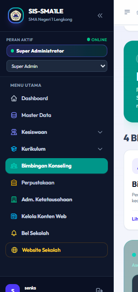

BUKU PANDUAN RESMI PENGGUNA SISTEM (USER MANUAL)
MODUL PENGGUNAAN LENGKAP APLIKASI SIS-SMA1LE
Panduan Terpadu Operasional Seluruh Fitur Berdasarkan Matriks Multi-Peran (Multi-Role)
Memuat instruksi operasional terperinci untuk 10 peran pengguna: Super Administrator, Kepala Sekolah, Wakasek Kurikulum, Wakasek Kesiswaan, Guru BK, Guru Mata Pelajaran, Wali Kelas, Tenaga Administrasi (TU), Pengelola Perpustakaan, dan Peserta Didik (Siswa Kelas X, XI, XII). Dilengkapi alur kerja sistematis, tampilan antarmuka (UI), panduan AKPD Diagnostik Fase E, Psikotes AI 360°, CBT, LMS, dan Rapor Kurikulum Nasional 2025.
DAFTAR ISI & STRUKTUR APLIKASI SIS-SMA1LE
IKHTISAR
Aplikasi SIS-SMA1LE dirancang dengan arsitektur modular terintegrasi yang menyatukan seluruh tata kelola pendidikan di SMA Negeri 1 Lengkong ke dalam satu gerbang terpadu. Berikut adalah peta struktur modul dalam buku panduan ini:
| Bagian |
Judul Modul / Bab |
Cakupan Fitur & Pembahasan Utama |
| BAGIAN I |
Gerbang Autentikasi & Fitur Peran Aktif |
Akses Single Sign-On (SSO), Form Login, Keamanan Akun, dan Fitur Beralih Peran (Role Switcher) bagi pendidik dengan penugasan ganda. |
| BAGIAN II |
Panduan Menu Navigasi Utama |
Bedah 10 menu sidebar: Dashboard, Master Data, Kesiswaan, Kurikulum, Bimbingan Konseling, Perpustakaan, Adm. Ketatausahaan, Kelola Konten Web, Bel Sekolah, dan Website Sekolah.
|
| BAGIAN III |
Panduan Peserta Didik (Siswa) |
Presensi Mandiri GPS/Selfie, AKPD Diagnostik Khusus Kelas X, Tes Psikotes VAK/RIASEC, LMS Belajar, Ujian Online CBT, Pembiasaan 7 KAIH, Tahfidz Qur'an, dan Curhat BK. |
| BAGIAN IV |
Panduan Guru Bimbingan Konseling (BK) |
Pengelolaan AKPD Fase E, Profil Individual & Rombel, Psikotes AI 360°, Layanan Curhat Online, Sosiometri, Konseling POP-BK, Home Visit, Pemanggilan Ortu, dan RPL BK 1 Lembar. |
| BAGIAN V |
Panduan Guru Mata Pelajaran (Mapel) |
Presensi KBM, Penyiapan Modul & Tugas di LMS, Pembuatan Soal & Jadwal Ujian CBT, Penilaian Formatif/Sumatif Kurikulum Nasional 2025. |
| BAGIAN VI |
Panduan Wali Kelas |
Monitoring Presensi & Karakter Siswa Binaan, Rekapitulasi Catatan Perkembangan, Input Nilai Ekstrakurikuler, dan Penerbitan Buku Rapor Kurnas 2025. |
| BAGIAN VII |
Panduan Pengelola Perpustakaan |
Katalogisasi Buku (DDC/ISBN), Sirkulasi Peminjaman & Pengembalian Berbasis Barcode, Kartu Anggota Digital, Tracking Denda. |
| BAGIAN VIII |
Panduan Administrasi Tata Usaha (TU) |
Buku Agenda Surat Masuk & Keluar, Disposisi Digital, SPPD, Buku Induk Siswa, Mutasi Peserta Didik, Arsip Digital, dan Legalisir Ijazah. |
| BAGIAN IX |
Panduan Kepala Sekolah & Wakasek |
Dashboard Eksekutif, Supervisi KBM, Otorisasi Rapor, Manajemen Kebijakan Kesiswaan & Kurikulum Sekolah. |
| BAGIAN X |
Panduan Super Administrator / IT |
Master Data Sekolah, Manajemen User & Hak Akses, Penjadwalan Bel Sekolah Otomatis, CMS Konten Website Sekolah, Backup Database. |
| BAGIAN XI |
Standar Cetak A4 & Troubleshooting |
Petunjuk teknis print dokumen resmi A4 browser tanpa garis tepi dan pemecahan kendala teknis operasional. |
Catatan Penting Penggunaan Panduan: Setiap pengguna dapat langsung menuju bab spesifik sesuai dengan peran yang ditugaskan oleh pihak sekolah. Bagi pengguna yang memiliki peran ganda (misal: Guru yang merangkap sebagai Wali Kelas atau Pembina Ekstra), pastikan mempelajari bab mengenai Fitur Beralih Peran Aktif pada Bagian I.
BAGIAN I: GERBANG AKSES & FITUR PERAN AKTIF
BAB I
1.1 Alur Autentikasi Masuk Sistem (Login)
Aplikasi SIS-SMA1LE dapat diakses oleh seluruh sivitas akademika melalui web browser modern (Google Chrome, Microsoft Edge, Mozilla Firefox, Safari) pada perangkat komputer desktop, laptop, maupun telepon pintar (smartphone).
-
1
Kunjungi Alamat Resmi: Buka peramban web dan ketikkan alamat resmi https://sman1lengkong.school/login.
-
2
Masukkan Kredensial: Masukkan NISN/NIP/Email resmi yang telah didaftarkan administrator, serta kata sandi akun Anda.
-
3
Klik Tombol "Masuk": Sistem akan melakukan verifikasi identitas dan membawa Anda langsung ke Dashboard sesuai peran hak akses.
-
4
Lupa Kata Sandi: Hubungi Administrator TU atau manfaatkan fitur Reset Password mandiri jika diaktifkan.
 SISTEM INFORMASI SEKOLAH (SIS)
SMA Negeri 1 Lengkong
SISTEM INFORMASI SEKOLAH (SIS)
SMA Negeri 1 Lengkong
👤 NISN / NIP / Email
🔒 Kata Sandi
MASUK KE SISTEM
1.2 Antarmuka Sidebar & Fitur Beralih Peran (Role Switcher)
Salah satu keunggulan utama SIS-SMA1LE adalah Manajemen Multi-Peran Terpadu. Seorang guru di SMAN 1 Lengkong dapat mengemban beberapa tugas sekaligus tanpa harus logout dan login ulang dengan akun berbeda.

Tangkapan Layar Asli: Sidebar Navigasi & Fitur "Peran Aktif" SIS-SMA1LE
Cara Menggunakan Fitur Peran Aktif:
-
A
Status Indikator Online: Menampilkan status koneksi aktif pengguna dan lencana peran utama yang sedang berlaku.
-
B
Dropdown Beralih Peran: Pada menu bagian atas sidebar, klik dropdown Peran Aktif untuk beralih mode kerja (misal: dari Guru Mapel ke Wali Kelas atau Pembina Ekstra).
-
C
Mode Semua Peran (⚡ All Roles): Menampilkan seluruh menu gabungan dari semua penugasan yang Anda miliki secara bersamaan.
-
D
Simulasi Super Admin: Super Administrator memiliki kemampuan mensimulasikan pandangan setiap role untuk keperluan monitoring dan bantuan teknis.
Penting: Ketika Anda berpindah peran aktif, menu navigasi sidebar akan langsung menyesuaikan secara dinamis agar Anda dapat fokus mengerjakan tugas sesuai peran tersebut.
BAGIAN II: STRUKTUR 10 MENU UTAMA SIDEBAR
BAB II
Berdasarkan struktur antarmuka aplikasi SIS-SMA1LE, terdapat 10 kelompok menu utama yang tersusun rapi pada bilah navigasi sisi kiri (sidebar). Berikut adalah penjelasan fungsi setiap menu:
| No |
Menu Sidebar |
Sub-Menu / Item Fitur |
Tujuan & Fungsi Penggunaan |
Peran yang Berwenang |
| 1 |
Dashboard |
Ringkasan Statistik, Kalender Agenda, Notifikasi |
Pusat informasi awal yang menyajikan ringkasan data penting, pengumuman sekolah, grafik presensi, dan jadwal harian. |
Semua Role |
| 2 |
Master Data |
Profil Sekolah, Data Guru, Data Siswa, Rombel, Mapel, Pengguna |
Pusat konfigurasi data induk sekolah, pembagian kelas/rombel, penugasan guru, alokasi mata pelajaran, dan manajemen akun pengguna. |
Super Admin Admin TU |
| 3 |
Kesiswaan
(Accordion Menu) |
• Presensi Harian
• SPMB / PPDB
• Tata Tertib & Poin
• Hafalan Qur'an
• Pembiasaan 7 KAIH
• Raport Digital |
Mengelola seluruh siklus hidup kesiswaan: absensi GPS/kiosk, kedisiplinan poin pelanggaran/prestasi, penerimaan siswa baru, setoran tahfidz, dan pembiasaan karakter 7 KAIH. |
Wakasek Kesiswaan Wali Kelas Guru Piket Siswa |
| 4 |
Kurikulum
(Accordion Menu) |
• Ujian Online (CBT)
• LMS Pembelajaran
• Rapor Kurnas 2025 |
Mengatur kegiatan belajar mengajar: pelaksanaan ujian berbasis komputer (CBT), pembagian materi/tugas via LMS, dan pengolahan rapor Kurikulum Nasional 2025. |
Wakasek Kurikulum Guru Mapel Wali Kelas Siswa |
| 5 |
Bimbingan Konseling |
• AKPD Diagnostik Fase E
• Psikotes AI 360°
• Ruang Curhat Online
• Sosiometri & Konseling
• Home Visit & RPL |
Pusat layanan psikopedagogis POP-BK: asesmen kebutuhan non-tes kelas X, psikotes minat bakat VAK/RIASEC/Gardner dengan AI, konseling kasus, dan penerbitan RPL 1 lembar. |
Guru BK Siswa Kepala Sekolah |
| 6 |
Perpustakaan |
Katalog Buku DDC, Sirkulasi Pinjam-Kembali, Kartu Anggota, Denda |
Otomatisasi perpustakaan sekolah berbasis barcode scanner, manajemen koleksi buku cetak & digital, pencatatan transaksi peminjaman serta monitoring denda. |
Pengelola Perpus Guru Siswa |
| 7 |
Adm. Ketatausahaan |
Buku Agenda Surat, Disposisi Digital, SPPD, Buku Induk, Mutasi, Arsip |
Tata kelola administrasi perkantoran sekolah: persuratan masuk/keluar, alur disposisi elektronik kepala sekolah, administrasi kepegawaian DUK/DSO, dan buku induk. |
Staf TU Kepala Sekolah |
| 8 |
Kelola Konten Web |
Berita, Galeri Foto/Video, Agenda, Banner Slider, Pengumuman |
Content Management System (CMS) untuk memperbarui konten berita, artikel, dokumentasi prestasi, dan agenda pada website publik SMAN 1 Lengkong. |
Admin Web / Humas |
| 9 |
Bel Sekolah |
Jadwal Bel Harian, Bel Khusus, Pemutar Nada MP3 Otomatis |
Sistem otomasi bel sekolah digital yang membunyikan nada/lagu MP3 terprogram secara presisi untuk jam masuk, pergantian pelajaran, istirahat, dan pulang. |
Petugas Piket / Admin |
| 10 |
Website Sekolah |
Tautan Portal Publik (sman1lengkong.school) |
Pintu keluar cepat menuju portal utama website sekolah yang dapat diakses publik, calon pendaftar SPMB, orang tua, dan masyarakat luas. |
Publik / Semua |
BAGIAN III: PANDUAN PENGGUNAAN OLEH SISWA
ROLE: SISWA
Peserta didik (siswa) SMAN 1 Lengkong memiliki akses terarah yang mempermudah kegiatan belajar mandiri, kedisiplinan, asesmen diagnostik, serta bimbingan konseling.
3.1 Presensi Mandiri (Selfie GPS Geofencing & Barcode Kiosk)
Presensi harian siswa dapat dilakukan secara mandiri setiap pagi hari saat tiba di sekolah:
-
1
Masuk Menu: Klik menu Presensi Saya pada sidebar.
-
2
Izinkan Akses Lokasi & Kamera: Tekan "Allow / Izinkan" saat browser meminta izin kamera dan GPS perangkat Anda.
-
3
Verifikasi Geofencing: Sistem memeriksa radius koordinat GPS Anda terhadap titik lokasi resmi SMAN 1 Lengkong (maks. radius 100 meter).
-
4
Ambil Foto Selfie & Kirim: Posisikan wajah Anda pada bingkai kamera, lalu klik tombol "Kirim Presensi Masuk".
📷 [Area Kamera Deteksi Wajah]
✓ Koordinat GPS Sesuai Titik Sekolah
KIRIM PRESENSI MASUK
3.2 Asesmen AKPD Diagnostik Non-Tes (Khusus Kelas X / Fase E)
Angket Kebutuhan Peserta Didik (AKPD) Diagnostik adalah instrumen non-tes wajib bagi Siswa Kelas X (Fase E) untuk memetakan kebutuhan layanan bimbingan konseling dan peminatan karir.
Aturan Hak Akses AKPD: Menu AKPD Diagnostik hanya dapat diakses dan diisi oleh siswa Kelas X. Apabila siswa Kelas XI atau XII mencoba membuka modul ini, sistem secara otomatis menampilkan pesan proteksi: "Akses Dibatasi: Asesmen AKPD Diagnostik hanya diperuntukkan bagi Peserta Didik Kelas X (Fase E)".
-
1
Akses Modul: Buka menu Bimbingan Konseling → pilih AKPD Diagnostik.
-
2
Pengisian Butir Pernyataan: Baca secara seksama setiap butir pernyataan (terdiri dari 4 bidang: Pribadi, Sosial, Belajar, Karir). Pilih centang "YA" jika pernyataan tersebut sesuai dengan kondisi/masalah yang Anda rasakan, atau biarkan tidak tercentang jika tidak sesuai.
-
3
Kirim Lembar Jawaban: Setelah memeriksa seluruh nomor, klik tombol "Kirim & Simpan Jawaban AKPD".
-
4
Lihat Profil Individual: Siswa dapat langsung melihat grafik persentase kebutuhan 4 bidang dan rekomendasi program bimbingan konseling.
3.3 Asesmen Psikotes Minat Bakat (VAK, RIASEC, & Gardner)
Tes psikometri mandiri untuk mengenali potensi diri secara mendalam:
- Tes Gaya Belajar (VAK): Menentukan kecenderungan modalitas belajar Anda: Visual, Auditori, atau Kinestetik.
- Tes Minat Karir (Holland RIASEC): Mengidentifikasi orientasi profesi berdasarkan 6 tipe kepribadian: Realistic, Investigative, Artistic, Social, Enterprising, Conventional.
- Tes Kecerdasan Majemuk (Howard Gardner): Memetakan spektrum 8 kecerdasan manusia (Linguistik, Logis-Matematis, Spasial, Musikal, Kinestetik, Interpersonal, Intrapersonal, Naturalis).
BAGIAN III: PANDUAN SISWA (LANJUTAN)
ROLE: SISWA
3.4 Belajar di LMS (Materi, Modul & Kumpul Tugas)
Learning Management System (LMS) SIS-SMA1LE adalah ruang kelas daring untuk mengakses materi dan mengumpulkan tugas mata pelajaran:
-
1
Buka Menu LMS: Klik menu LMS Belajar pada sidebar. Di halaman ini muncul daftar mata pelajaran yang Anda ikuti.
-
2
Unduh Modul & Materi: Klik judul materi untuk membaca ringkasan atau mengunduh lampiran file PDF, dokumen presentasi, maupun tautan video YouTube dari guru.
-
3
Pengumpulan Tugas Daring: Pada tugas yang berstatus "Menunggu Pengumpulan", klik tombol "Kumpulkan Tugas". Unggah file dokumen tugas Anda (format PDF/DOCX/JPG) atau ketikkan jawaban teks langsung di editor, lalu klik "Kirim Jawaban" sebelum batas waktu berakhir.
-
4
Cek Umpan Balik Guru: Setelah guru memeriksa tugas Anda, nilai angka dan catatan umpan balik (feedback) dapat langsung dilihat di halaman riwayat tugas.
3.5 Mengikuti Ujian Online (CBT - Computer Based Test)
Aplikasi CBT SIS-SMA1LE dilengkapi sistem pengamanan ujian online (anti-cheat detection) yang mencegah kecurangan:
-
1
Buka Menu CBT: Klik Ujian Online (CBT) pada sidebar.
-
2
Pilih Ujian Aktif: Cari jadwal ujian yang sedang berlangsung, lalu klik "Mulai Ujian".
-
3
Masukkan Token Ujian: Ketikkan token ujian yang dibagikan oleh guru pengawas, lalu konfirmasi masuk.
-
4
Kerjakan Soal: Jawab soal dengan memilih opsi A/B/C/D/E atau mengetik esai. Anda dapat menandai tombol "Ragu-ragu" jika ingin meninjau kembali.
-
5
Selesaikan Ujian: Pada nomor terakhir, klik "Selesai & Kunci Ujian" untuk mengirim lembar jawaban ke server.
Peringatan Anti-Kecurangan (Anti-Cheat): Selama ujian CBT berlangsung, dilarang membuka tab baru, meminimize browser, atau mengambil tangkapan layar. Sistem akan mencatat log peringatan otomatis kepada pengawas ujian jika terdeteksi peralihan aplikasi.
3.6 Pembiasaan 7 KAIH & Setoran Hafalan Qur'an (Tahfidz)
Jurnal Karakter 7 KAIH:
Menu 7 KAIH (7 Kebiasaan Anak Indonesia Hebat) memfasilitasi pencatatan pembiasaan harian: bangun pagi, beribadah, berolahraga, makan bergizi, gemar membaca, tolong menolong, dan tidur tepat waktu. Siswa mengisi checklist harian yang terpantau oleh wali kelas.
Setoran Tahfidz & Murottal:
Menu Hafalan Qur'an dan Al-Qur'an Digital memungkinkan siswa membaca mushaf 30 juz secara digital serta memantau riwayat setoran juz/surah yang telah divalidasi oleh koordinator keagamaan sekolah.
3.7 Ruang Curhat Konseling BK (Kerahasiaan Terjamin)
Siswa yang membutuhkan bimbingan pribadi, sosial, belajar, maupun karir dapat memanfaatkan menu Curhat BK. Pesan yang dikirimkan bersifat privat, aman, dan hanya dapat dibaca oleh Guru BK yang Anda pilih untuk sesi konseling lebih lanjut.
BAGIAN IV: PANDUAN GURU BIMBINGAN KONSELING (BK)
ROLE: GURU BK
Modul Bimbingan Konseling (BK) di SIS-SMA1LE disusun sesuai Panduan Operasional Penyelenggaraan Bimbingan dan Konseling (POP-BK) Kemendikbudristek, mendukung 4 bidang layanan (Pribadi, Sosial, Belajar, Karir).
4.1 Manajemen Asesmen AKPD Diagnostik Fase E (Kelas X)
Guru BK bertugas memantau pengisian angket kebutuhan non-tes bagi peserta didik baru kelas X:
| Fitur AKPD |
Deskripsi Operasional |
Tindakan / Aksi Tombol |
| Monitoring Pengisian Rombel |
Memantau persentase siswa kelas X yang sudah mengisi vs belum mengisi angket per rombel (X-1 s/d X-8). |
Buka menu BK → AKPD Diagnostik → pilih tab kelas. |
| Laporan Profil Individual |
Melihat rincian skor kebutuhan per butir pernyataan dan grafik radar 4 bidang layanan per individu siswa. |
Klik nama siswa → klik tombol "Cetak Profil Individu (A4)". |
| Laporan Kebutuhan Rombel (Kelas) |
Merekapitulasi butir masalah prioritas tertinggi dalam 1 kelas untuk perumusan program layanan klasikal BK. |
Pilih kelas → klik tombol "Cetak Laporan Rombel (A4)". Dilengkapi kop resmi dan format 3 tanda tangan. |
| Reset Respons Jawaban |
Memberikan kesempatan siswa mengisi ulang apabila terdapat kesalahan pengisian yang fatal. |
Klik tombol merah "Reset AKPD" pada profil siswa terkait. |
4.2 Grand Asesmen Psikotes Minat Bakat & Master AI 360°
Integrasi instrumen psikometri dengan kecerdasan buatan (Google Gemini Engine):
-
1
Rekapitulasi Hasil Psikotes: Guru BK dapat memfilter hasil tes berdasarkan gaya belajar dominan (Visual/Auditori/Kinestetik) atau klaster karir Holland RIASEC.
-
2
Sintesis Master AI Terpadu 360°: Klik tombol "Generate AI 360° Synthesis" pada profil siswa. Algoritma AI akan menggabungkan data psikotes, rekapitulasi AKPD, jurnal 7 KAIH, dan catatan disiplin ke dalam narasi rekomendasi studi lanjut dan karir yang komprehensif.
-
3
Cetak Hasil Asesmen Psikotes Resmi: Unduh atau cetak dokumen resmi hasil asesmen minat bakat berstandar psikologi untuk arsip portofolio siswa dan laporan kepada orang tua.
4.3 Layanan Responsif POP-BK Terpadu
1. Konseling Individu & Kelompok:
Mencatat rekam jejak konseling: latar belakang masalah, pendekatan/teknik konseling yang diterapkan, rencana tindak lanjut, serta evaluasi hasil konseling.
2. Sosiometri Digital:
Mengolah data pilihan teman sebaya siswa dalam kelas untuk menghasilkan sosiogram visual (mengidentifikasi siswa populer, klik/kelompok kecil, dan siswa terisolir).
3. Home Visit & Pemanggilan Ortu:
Penerbitan otomatis Surat Tugas Kunjungan Rumah (Home Visit) dan Surat Pemanggilan Orang Tua resmi berkop SMAN 1 Lengkong lengkap dengan nomor surat dan barcode autentikasi.
4. Konferensi Kasus & Alih Tangan (Referral):
Dokumentasi resmi rapat multi-pihak penanganan masalah siswa berat atau rujukan ke pihak eksternal (psikolog, psikiater, dinas sosial).
4.4 Pembuatan RPL (Rencana Pelaksanaan Layanan) 1 Lembar Otomatis
Guru BK dapat mengonversi butir prioritas kebutuhan AKPD kelas langsung menjadi dokumen RPL BK 1 Lembar resmi yang siap diajukan untuk supervisi Kepala Sekolah dengan sekali klik.
BAGIAN V: PANDUAN GURU MATA PELAJARAN (MAPEL)
ROLE: GURU MAPEL
Guru Mata Pelajaran memiliki akses untuk mengelola pembelajaran di kelas, presensi mengajar, modul ajar LMS, asesmen CBT, serta penginputan nilai Kurikulum Nasional 2025.
5.1 Presensi KBM & Jurnal Mengajar Kelas
-
1
Buka Jadwal KBM: Pada sidebar, masuk ke menu Kurikulum → Jadwal Mengajar. Pilih kelas dan jam pelajaran yang sedang aktif.
-
2
Isi Jurnal Mengajar: Ketikkan materi pokok bahasan yang diajarkan hari ini dan catatan keterlaksanaan KBM.
-
3
Presensi Siswa di Kelas: Tandai status kehadiran siswa per jam pelajaran: Hadir (H), Sakit (S), Izin (I), atau Alpa (A). Klik tombol "Simpan Presensi KBM".
5.2 Pengelolaan LMS Pembelajaran (Materi & Tugas)
A. Mengunggah Materi / Modul Ajar:
Klik menu LMS → Buat Materi Baru. Pilih rombel target, ketik judul materi, tuliskan uraian ringkasan materi, lalu unggah file lampiran (PDF/PPTX/DOCX) atau sematkan tautan video YouTube. Klik "Terbitkan Materi".
B. Penugasan & Pemeriksaan Tugas Siswa:
Klik menu LMS → Buat Tugas. Tentukan batas akhir (deadline) pengumpulan. Saat siswa mengumpulkan, guru dapat mengunduh jawaban, memberikan nilai angka (skala 0-100), dan menuliskan catatan koreksi yang langsung diterima siswa.
5.3 Manajemen Ujian Online (CBT - Computer Based Test)
| Tahapan CBT |
Panduan Pelaksanaan |
Fitur Terkait |
| 1. Bank Soal |
Membuat soal pilihan ganda (opsi A-E) atau esai. Mendukung rumus matematika (LaTeX), tabel, gambar, dan audio listening. Bisa impor dari template Excel. |
Menu Kurikulum → CBT → Bank Soal. |
| 2. Penjadwalan Ujian |
Menentukan tanggal pelaksanaan, jam mulai/selesai, alokasi durasi menit pengerjaan, opsi acak soal, dan generate token ujian. |
Tombol "Buat Jadwal Ujian" pada Bank Soal. |
| 3. Monitoring Live |
Memantau siswa yang sedang online, durasi sisa waktu masing-masing siswa, serta deteksi log kecurangan secara realtime. |
Halaman "Monitoring Peserta CBT". |
| 4. Ekspor Nilai |
Nilai pilihan ganda dikoreksi otomatis oleh sistem. Nilai esai dapat dinilai manual. Ekspor hasil ujian ke format Excel/PDF. |
Tombol "Ekspor Nilai CBT (XLSX)". |
5.4 Penilaian Rapor Kurikulum Nasional 2025 (Permendikdasmen No. 13 Tahun 2025)
-
1
Akses Modul Rapor: Masuk ke menu Kurikulum → Rapor Kurnas → Input Nilai Mapel.
-
2
Definisikan Tujuan Pembelajaran (TP): Masukkan kode dan deskripsi TP yang diajarkan pada semester ini (contoh: TP 1, TP 2, TP 3).
-
3
Input Nilai Asesmen Formatif & Sumatif: Masukkan nilai asesmen formatif (ketercapaian TP) dan nilai sumatif akhir lingkup materi / sumatif akhir semester.
-
4
Generate Deskripsi Capaian Otomatis: Sistem secara otomatis menyusun narasi deskripsi capaian kompetensi tertinggi dan kompetensi yang perlu ditingkatkan berdasarkan Permendikdasmen No. 13 Tahun 2025. Guru dapat mengedit redaksi jika diperlukan.
-
5
Kirim Nilai ke Wali Kelas: Klik tombol "Kunci & Kirim Nilai ke Wali Kelas".
BAGIAN VI: PANDUAN WALI KELAS
ROLE: WALI KELAS
Wali Kelas berperan sebagai pembimbing utama rombongan belajar (rombel) binaan, mengawasi kedisiplinan dan karakter, serta bertanggung jawab penuh atas penerbitan Buku Rapor Siswa.
6.1 Pemantauan Harian Rombel Binaan
Monitoring Presensi & Poin Disiplin:
-
•
Memantau rekapitulasi harian kehadiran siswa (Hadir, Sakit, Izin, Alpa) pada dashboard wali kelas.
-
•
Mengecek akumulasi poin pelanggaran dan poin prestasi siswa pada menu Kesiswaan → Tata Tertib.
-
•
Berkoordinasi dengan Guru BK apabila ada siswa yang mencapai batas ambang poin pembinaan.
Pemantauan 7 KAIH & Tahfidz:
6.2 Pengisian Komponen Rapor Kurikulum Nasional 2025
Sebelum mencetak buku rapor, Wali Kelas wajib melengkapi data pelengkap berikut pada menu Kurikulum → Rapor Kurnas → Kelola Kelas:
| Komponen Rapor |
Deskripsi Data yang Diinputkan |
Status Wajib |
| Ekstrakurikuler |
Memilih jenis ekstrakurikuler yang diikuti siswa (Pramuka, PMR, Paskibra, OSIS, dll.), predikat nilai (Sangat Baik / Baik), dan keterangan deskripsi kegiatan. |
Wajib (Jika ikut ekskul) |
| Rekapitulasi Absensi |
Jumlah hari Sakit (S), Izin (I), dan Tanpa Keterangan / Alpa (A) selama satu semester (dapat ditarik otomatis dari sistem presensi). |
Wajib diisi |
| Catatan Wali Kelas |
Narasi motivasi dan evaluasi perkembangan belajar, budi pekerti, dan kepribadian siswa selama satu semester. |
Wajib diisi |
| Kenaikan Kelas / Kelulusan |
Menentukan status kelulusan semester genap: "Naik ke kelas XI / XII" atau "Lulus dari satuan pendidikan". |
Khusus Semester Genap |
6.3 Verifikasi Leger Nilai & Penerbitan Rapor A4 Resmi
-
1
Periksa Leger Nilai Kelas: Buka menu Leger Nilai untuk memastikan seluruh Guru Mapel telah menginput nilai lengkap tanpa ada nilai kosong (NaN / Null).
-
2
Kunci Rapor Kelas: Klik tombol "Kunci Rapor Kelas" untuk mencegah perubahan nilai sepihak menjelang hari pembagian rapor.
-
3
Cetak Dokumen Kelengkapan Rapor:
- Cetak Sampul / Cover Rapor: Memuat identitas sekolah dan logo resmi.
- Cetak Biodata Peserta Didik: Lembar data diri lengkap siswa.
- Cetak Lembar Nilai Akademik: Memuat nilai akhir dan capaian kompetensi per mapel berstandar Permendikdasmen No. 13 Tahun 2025.
- Cetak Lampiran Ekstrakurikuler & Kehadiran: Lembar tanda tangan resmi tripartite (Orang Tua, Wali Kelas, Kepala Sekolah).
BAGIAN VII: PANDUAN PENGELOLA PERPUSTAKAAN
ROLE: PUSTAKAWAN
Perpustakaan SMAN 1 Lengkong dilengkapi sistem manajemen sirkulasi buku digital berbasis Barcode Scanner yang mempermudah katalogisasi dan peminjaman buku oleh siswa dan guru.
7.1 Manajemen Katalog Buku & Klasifikasi DDC
-
1
Tambah Judul Koleksi: Masuk ke menu Perpustakaan → Katalog Buku → Tambah Buku.
-
2
Input Metadata Buku: Masukkan Judul Buku, Pengarang, Penerbit, Tahun Terbit, Nomor ISBN, dan Nomor Klasifikasi DDC (Dewey Decimal Classification).
-
3
Stok & Lokasi Rak: Tentukan jumlah eksemplar fisik buku serta lokasi kode rak penyimpanan di perpustakaan.
-
4
Cetak Barcode Label Buku: Klik tombol "Generate & Print Barcode Label" untuk ditempel pada punggung buku fisik.
Fitur E-Library (Buku Digital): Pengelola perpustakaan juga dapat mengunggah file buku digital (E-Book format PDF) untuk materi referensi umum atau modul pembelajaran yang dapat dibaca langsung oleh siswa dari menu Perpustakaan di akun siswa.
7.2 Sirkulasi Peminjaman & Pengembalian Buku
| Transaksi |
Prosedur Operasional Sirkulasi |
Validasi Sistem |
| Peminjaman Buku |
1. Pustakawan membuka menu Perpustakaan → Sirkulasi → Peminjaman.
2. Scan barcode Kartu Anggota Siswa (atau ketik NISN).
3. Scan barcode eksemplar buku yang dipinjam.
4. Sistem mencatat tanggal pinjam dan tanggal jatuh tempo pengembalian (default: 7 hari).
5. Klik "Simpan Transaksi Pinjam".
|
Mengecek batas maksimal buku yang boleh dipinjam dan mendeteksi apakah anggota masih memiliki tanggungan buku yang belum kembali. |
| Pengembalian Buku |
1. Buka menu Perpustakaan → Sirkulasi → Pengembalian.
2. Scan barcode buku yang dikembalikan siswa.
3. Sistem otomatis mencocokkan data pinjam dan menghitung denda keterlambatan (jika melewati jatuh tempo).
4. Klik "Konfirmasi Pengembalian".
|
Stok buku di katalog otomatis bertambah kembali dan riwayat peminjaman siswa diarsipkan. |
| Pengelolaan Denda |
Mencatat penerimaan pembayaran denda keterlambatan dan mencetak bukti pembayaran kas perpustakaan. |
Laporan keuangan kas denda perpustakaan tercatat rapi. |
7.3 Cetak Kartu Anggota Perpustakaan Berbarcode
Pustakawan dapat mencetak kartu anggota perpustakaan digital untuk seluruh siswa dan guru dengan format A4 (berisi 8-10 kartu per lembar) lengkap dengan barcode identitas terenkripsi.
BAGIAN VIII: PANDUAN ADMINISTRASI TATA USAHA (TU)
ROLE: STAF TU
Modul Administrasi Ketatausahaan (TU) SIS-SMA1LE mengotomatisasi persuratan dinas, disposisi pimpinan, administrasi kepegawaian, buku induk peserta didik, dan arsip digital.
8.1 Buku Agenda Persuratan (Surat Masuk & Surat Keluar)
A. Alur Surat Masuk & Disposisi:
-
1
Input Surat Masuk: Buka Adm. TU → Surat Masuk → Tambah. Masukkan nomor surat asal, instansi pengirim, tanggal surat, dan perihal.
-
2
Unggah Scan Berkas: Lampirkan file scan surat fisik (format PDF / gambar).
-
3
Ajukan ke Kepala Sekolah: Klik "Kirim ke Meja Kepala Sekolah". Kepala Sekolah akan menerima notifikasi disposisi elektronik.
-
4
Distribusi Disposisi: Setelah Kepala Sekolah memberikan instruksi disposisi, staf TU mendistribusikan salinan disposisi ke penerima tugas (Wakasek, Guru, atau Tendik).
B. Alur Penomoran Surat Keluar:
-
1
Ambil Nomor Surat: Masuk ke Adm. TU → Surat Keluar → Tambah. Pilih klasifikasi kode surat (misal: 421.3 / Kepegawaian / Kesiswaan).
-
2
Penomoran Otomatis: Sistem secara otomatis mengalokasikan nomor urut resmi berikutnya untuk menghindari nomor surat ganda atau terlewat.
-
3
Arsip Digital: Unggah salinan surat bertandatangan dan berstempel resmi ke dalam repositori arsip digital sekolah.
8.2 Surat Perintah Perjalanan Dinas (SPPD) Elektronik
Membuat naskah dinas Surat Tugas dan SPPD bagi Kepala Sekolah, Pendidik, maupun Tenaga Kependidikan yang melaksanakan dinas luar. Format cetak langsung sesuai standar tata naskah dinas Pemda Provinsi Jawa Barat.
8.3 Buku Induk Siswa, Buku Klaper & Administrasi Mutasi
| Layanan Administrasi |
Deskripsi Tata Cara Operasional |
Output Dokumen |
| Buku Induk Siswa |
Menyimpan lembar rekam jejak siswa sepanjang masa pendidikan: data pribadi, orang tua, riwayat kesehatan, nilai semester, hingga tanggal kelulusan. |
Format Cetak Buku Induk A4 / Folio Resmi. |
| Buku Klaper |
Daftar urut abjad seluruh peserta didik per angkatan tahun ajaran untuk mempermudah pencarian arsip lama. |
Daftar Klaper Alfabetis. |
| Mutasi Masuk / Keluar |
Pencatatan siswa pindah masuk atau pindah keluar sekolah: verifikasi surat permohonan, validasi Dapodik, dan penerbitan Surat Keterangan Pindah Sekolah resmi. |
Surat Keterangan Mutasi & Validasi Berkas. |
| Layanan Legalisir Ijazah |
Verifikasi nomor seri ijazah alumni terhadap buku induk sekolah untuk layanan cap legalisir transkrip/ijazah. |
Buku Tamu & Tanda Terima Legalisir. |
BAGIAN IX: PANDUAN KEPALA SEKOLAH, WAKASEK & ADMIN
EKSEKUTIF & TEKNIS
9.1 Panduan Eksekutif Kepala Sekolah
Kepala Sekolah memiliki wewenang supervisi tertinggi untuk memantau seluruh proses operasional sekolah secara real-time:
-
•
Dashboard Eksekutif: Memantau persentase kehadiran harian guru dan siswa, rekapitulasi KBM aktif, dan ringkasan keuangan sekolah.
-
•
Lembar Disposisi Elektronik: Memberikan petunjuk arahan, catatan instruksi, dan mendelegasikan surat masuk kepada pejabat terkait dengan tanda tangan digital.
-
•
Otorisasi Rapor Sekolah: Melakukan penandatanganan dan persetujuan penerbitan buku rapor semester Kurikulum Nasional 2025.
Supervisi Akademik & Kesiswaan: Kepala Sekolah dapat memantau keterlaksanaan KBM seluruh mata pelajaran, jurnal mengajar guru, grafik ketercapaian asesmen AKPD, serta tren kedisiplinan siswa tanpa harus memeriksa dokumen fisik.
9.2 Panduan Wakasek Kurikulum & Wakasek Kesiswaan
| Jabatan |
Tanggung Jawab Utama di SIS-SMA1LE |
Menu Utama yang Dikelola |
| Wakasek Kurikulum |
Menyusun pembagian jam mengajar, kalender akademik, jadwal ujian CBT bersama, pengawasan pengisian rapor Kurnas, dan verifikasi kelulusan siswa. |
Kurikulum → Jadwal KBM, Bank Soal CBT, Leger Nilai, Rapor Kurnas. |
| Wakasek Kesiswaan |
Mengawasi presensi harian seluruh siswa, manajemen buku tata tertib & poin, kegiatan ekstrakurikuler, serta kepanitiaan SPMB / PPDB sekolah. |
Kesiswaan → Presensi Siswa, SPMB, Tata Tertib & Poin Disiplin. |
9.3 Panduan Super Administrator & Administrator IT
-
1
Manajemen Pengguna & Hak Akses: Melalui menu Master Data → Pengguna, administrator dapat menambah akun baru, menetapkan peran/role ganda, mereset password pengguna yang terkunci, serta mengaktifkan/menonaktifkan akun.
-
2
Otomasi Bel Sekolah Digital: Melalui menu Bel Sekolah, administrator mengatur jadwal jam pelajaran Senin - Kamis, Jumat, dan hari khusus, serta mengunggah file MP3 audio nada bel untuk disiarkan ke pengeras suara sekolah.
-
3
CMS Website Publik Sekolah: Melalui menu Kelola Konten Web, tim IT mengelola berita terkini, pengumuman, galeri dokumentasi foto kegiatan, serta banner slider beranda website resmi sman1lengkong.school.
-
4
Pemeliharaan & Backup Database: Melakukan pencadangan berkala basis data PostgreSQL/MySQL dan pembersihan cache aplikasi (php artisan optimize:clear) untuk menjamin stabilitas server.
BAGIAN X: PETUNJUK CETAK RESMI & PEMECAHAN MASALAH
SOP TEKNIS
10.1 Standar Konfigurasi Dialog Cetak Browser (Print Setup A4)
Agar seluruh laporan resmi (Rapor, AKPD, Hasil Psikotes, Surat Disposisi, Leger) tercetak secara presisi, rapi, dan proporsional pada kertas A4 tanpa terpotong, ikuti standar konfigurasi dialog cetak browser berikut:
| Parameter Cetak |
Nilai Pengaturan Wajib |
| Tujuan / Destination |
Pilih Save as PDF atau Nama Printer Fisik Anda |
| Ukuran Kertas (Paper Size) |
A4 (210 mm x 297 mm) |
| Orientasi (Orientation) |
Portrait (Kecuali Leger Nilai: Landscape) |
| Batas Tepi (Margins) |
None atau Default |
| Skala (Scale) |
Default (100%) atau Fit to Printable Area |
| Grafik Latar Belakang |
WAJIB DICENTANG [✓] (Background Graphics) |
| Header & Footer Browser |
DIHAPUS CENTANG [ ] (Agar tidak ada URL/tanggal default browser) |
PENTING: Centang "Background Graphics"!
Apabila opsi "Background Graphics" (Grafik Latar Belakang) tidak dicentang di browser, warna tabel, grafik batang asesmen AKPD, pita status lencana, dan garis pemisah kop sekolah tidak akan tercetak pada kertas fisik.
10.2 Pemecahan Masalah Operasional Umum (Troubleshooting FAQ)
| Gejala Kendala |
Kemungkinan Penyebab |
Langkah Solusi Pemecahan |
| Kamera selfie presensi tidak muncul |
Izin akses kamera diblokir oleh browser di perangkat smartphone / laptop siswa. |
Klik ikon gembok di sebelah kiri bilah alamat URL browser → pilih Site settings → ubah izin Camera menjadi Allow (Izinkan) → Refresh halaman. |
| GPS Presensi: "Di luar jangkauan sekolah" |
Akurasi sinyal lokasi GPS pada ponsel rendah atau belum mengaktifkan mode High Accuracy. |
Aktifkan fitur Location / Lokasi pada smartphone dengan mode High Accuracy (Google Location Accuracy aktif), hindari berada di dalam ruangan beratap logam tebal, lalu refresh browser. |
| Siswa Kelas XI/XII tidak bisa buka AKPD |
Sistem menerapkan proteksi ketat: modul AKPD Diagnostik Non-Tes secara regulasi hanya ditujukan untuk Kelas X (Fase E). |
Siswa kelas XI dan XII tidak perlu mengisi AKPD Diagnostik. Siswa dipersilakan mengakses modul Psikotes Minat Bakat atau LMS Belajar. |
| Token Ujian CBT ditolak / Invalid |
Waktu jam ujian belum dimulai, atau guru telah memperbarui token baru di pengawas. |
Konfirmasi token ujian terbaru kepada guru pengawas ruang dan pastikan jam di laptop/ponsel siswa sesuai dengan waktu Indonesia bagian barat (WIB). |
| Menu sidebar tidak sesuai penugasan |
Akun belum beralih ke peran aktif yang sesuai dengan tugas yang ingin dikerjakan. |
Klik dropdown "Peran Aktif" pada bagian atas sidebar, lalu pilih peran yang sesuai (misal: Wali Kelas atau Semua Peran). |
| Tampilan web berantakan / tidak update |
Browser menyimpan file cache usang (CSS/JS lama). |
Tekan kombinasi tombol Ctrl + Shift + R (di komputer) atau hapus riwayat penelusuran/cache browser di pengaturan handphone. |
SMA NEGERI 1 LENGKONG
Sistem Informasi Sekolah Terpadu (SIS-SMA1LE)
Pusat Bantuan & Layanan IT Sekolah:
Email: sman1lengkong@gmail.com | Portal: https://sman1lengkong.school